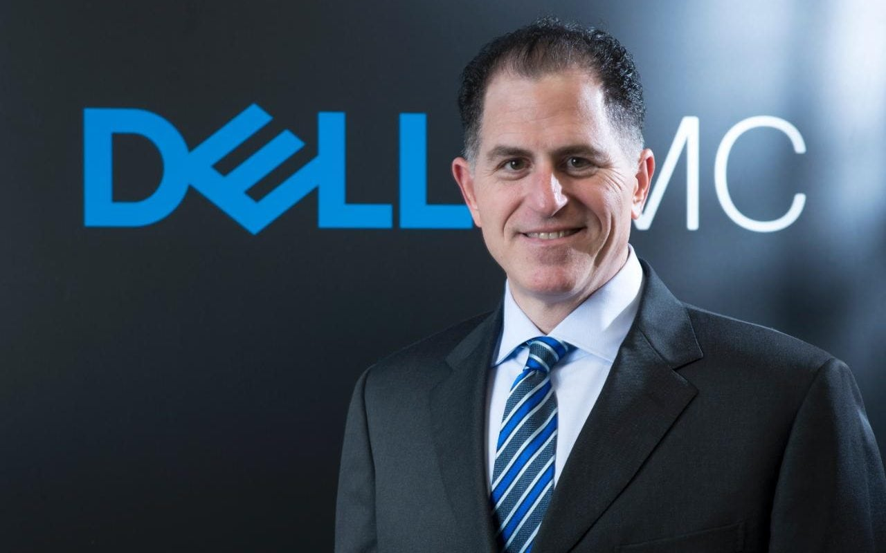

Michael Dell

.Năm 12 tuổi, Michael Dell đã kiếm được hai nghìn đô-la từ lần đầu kinh doanh những con tem.
Năm 16 tuổi, ông kiếm được 18 nghìn đô-la nhờ tiền công tiếp thị cho tòa soạn The Houston Post chỉ trong năm đầu tiên.
Năm 19 tuổi, ông đã kiếm được đến 80 nghìn đô-la/tháng nhờ việc nâng cấp máy tính cá nhân cho những người bạn trong khu ký túc xá.
Và năm 27 tuổi, ông trở thành CEO trẻ tuổi nhất thế giới khi đưa công ty của mình lọt vào danh sách Fortune 500[36].
Những thành công đầu đời của Michael Dell đã giúp ông trở thành một trong những doanh nhân nổi tiếng nhất thế kỷ XXI. Nếu nghe theo lời cha mẹ, có lẽ ông đã trở thành một bác sĩ. Họ đã hy vọng ông sẽ theo đuổi ngành y từ khi ông còn là sinh viên tại Đại học Texas. Nhưng, ông đã bỏ học. Với một nghìn đô-la trong tay, ông thành lập một doanh nghiệp nhỏ chuyên nâng cấp bộ nhớ và ổ đĩa máy tính cá nhân.
Ý tưởng lớn đã biến Dell trở thành nhà sản xuất máy tính cá nhân lớn nhất thế giới thực ra lại là một ý tưởng đơn giản nhưng được thực hiện một cách tuyệt vời. Dell nhận ra rằng ông có thể hạ đáng kể giá thành của một chiếc máy tính cá nhân và cung cấp dịch vụ cao cấp hơn bằng cách trực tiếp bán máy tính cho mọi tầng lớp khách hàng.
Dựa vào ý tưởng đơn giản đó, Dell đã xây dựng nên mô hình kinh doanh mang tính cách mạng. Sau đó, ông đã thay đổi chuỗi cung ứng và tạo ra một phương thức hiệu quả để làm ra chiếc máy tính dựa trên thông số kỹ thuật của từng khách hàng chỉ trong vài giờ sau khi nhận được đơn đặt hàng. Ông đã thực hiện điều đó bằng cách liên kết chuỗi cung ứng của các nhà sản xuất ra các linh kiện máy tính với quy trình lắp ráp của riêng ông nhằm cắt giảm chi phí và giải quyết triệt để tình trạng hàng tồn kho. Có thể nói, chính ý tưởng ban đầu và mô hình kinh doanh hỗ trợ cho ý tưởng đó đã biến Dell trở thành một trong những công ty công nghệ thông tin hàng đầu thế giới.
Năm 2004, sau 20 năm giữ chức vụ CEO, Michael Dell đã quyết định trao vị trí này lại cho Kevin B. Rollins, một cựu tư vấn viên của Công ty Bain and Company và là thành viên cấp cao của Dell trong tám năm trước đó. Khi doanh thu công ty vượt qua mức 40 tỷ đô-la, Michael Dell chỉ mới 39 tuổi.
Tuy nhiên, trong vòng một năm, tốc độ tăng trưởng của Dell đã chậm lại. Ngay sau đó, Tập đoàn Hewlett-Packard (HP) đã chiếm lại danh hiệu hãng sản xuất máy tính cá nhân lớn nhất thế giới. Năm 2007, Michael Dell lại nắm giữ chức CEO lần nữa. Ông chia sẻ: “Tôi cảm thấy tình hình của công ty lúc này giống như thời điểm năm 1984 và tôi đang bắt đầu lại từ đầu. Chỉ có điều là lần này tôi có nhiều vốn hơn một chút.”
Từ đó, Dell đã biến đổi từ một công ty chuyên sản xuất máy tính cá nhân trở thành một công ty công nghệ thông tin chuyên kinh doanh dịch vụ, máy chủ, hệ thống lưu trữ và các giải pháp cho trung tâm dữ liệu.
Câu chuyện thành công của Dell đã được lưu truyền rộng rãi. Năm 1974, khi ở trong ký túc xá, ông đã tạo ra một công ty thành công phi thường chuyên kinh doanh máy tính cá nhân và làm nên mô hình kinh doanh đột phá tập trung vào dịch vụ hậu cần và triển khai. Ông cảm thấy thế nào khi thay đổi từ mô hình cũ sang một mô hình mà ông gọi là “cốt lõi của công nghệ thông tin, tiến tới trung tâm dữ liệu”?
Cũng giống như hầu hết các công ty có quy mô tương tự, chúng tôi đã thực hiện những thay đổi đáng kể trong chiến lược, đặc biệt là trong vài năm qua khi chúng tôi đã phát triển để trở thành một công ty cung cấp giải pháp công nghệ thông tin mở rộng và đồng hành cùng với hàng triệu khách hàng trên toàn thế giới.
Ngày nay, chúng tôi cung cấp những giải pháp công nghệ cao được thiết kế để đáp ứng các nhu cầu của bất cứ người dùng công nghệ nào trên thế giới. Việc này bao gồm cung cấp các thiết bị lưu động như máy tính và điện thoại thông minh, cung cấp cơ sở hạ tầng trung tâm dữ liệu từ các máy chủ đến nơi lưu trữ rồi đến các điểm kết nối, cũng như cung cấp các dịch vụ công nghệ thông tin và ứng dụng cho phép sử dụng điện toán đám mây.
Chúng tôi đang làm việc trong một ngành công nghiệp thay đổi chỉ trong chớp mắt. Những gì được coi là “đột phá” trong ngày hôm nay có thể bị xem là lỗi thời vào ngày mai. Nhưng việc thay đổi để chạy theo xu hướng không phải là điều quan trọng mà đảm bảo rằng nền tảng doanh nghiệp của anh luôn đáp ứng được nhu cầu của khách hàng mới là điều cốt lõi. Đó là một nhân tố dẫn đường quan trọng của Dell kể từ khi chúng tôi mở những cánh cửa đầu tiên.
Thực tế là sự thay đổi lớn đầu tiên trong chiến lược kinh doanh của chúng tôi được lấy cảm hứng từ một chuyến viếng thăm của khách hàng đến văn phòng của chúng tôi vào năm 1985. Khi bắt đầu, Dell không phải là một công ty kinh doanh máy tính. Chúng tôi kinh doanh phần mềm lưu trữ và sản xuất bộ công cụ nâng cấp phần cứng cho máy tính IBM đời đầu. Trở lại thời điểm đó, máy tính cá nhân được bán ra thường có bộ nhớ rất nhỏ và không có ổ đĩa cứng. Do đó, khách hàng mua bộ công cụ của chúng tôi để nâng cấp khả năng lưu trữ và hoạt động của máy tính của họ.
Một ngày nọ, chúng tôi nhận được một cuộc gọi từ một trong những khách hàng lớn của công ty. Họ muốn mua 150 bộ công cụ nâng cấp phần cứng và chúng tôi định giá bán là 500 đô-la/bộ. Đó là một đơn đặt hàng lớn đối với chúng tôi. Tôi còn nhớ những giây phút hoảng loạn của cả nhóm khi khách hàng yêu cầu tham quan xưởng sản xuất của chúng tôi. Chúng tôi làm gì có xưởng sản xuất. Nó trông giống một phòng ký túc xá hơn là một văn phòng công nghệ cao.
Chuyến tham quan đã diễn ra tốt đẹp. Trong lúc tham quan, một người khách có nhìn thấy một số máy tính mà chúng tôi sử dụng để định dạng những bộ công cụ nâng cấp ổ cứng. Thời điểm này, máy tính cá nhân IBM rất đắt tiền, vì vậy chúng tôi đã tự lắp ráp máy tính với mục đích duy nhất là định dạng các ổ đĩa. Người khách ấy chỉ tay về phía những chiếc máy tính của chúng tôi và hỏi mua chúng. Chúng tôi chưa bao giờ bán máy tính của mình, nhưng trong giây phút ấy, đó thực sự là một ý tưởng không tồi! Trong thời hạn ba tháng, toàn bộ công việc kinh doanh của chúng tôi đã thay đổi. Chúng tôi bắt đầu thiết kế và lắp ráp máy tính theo đơn đặt hàng. Sự thay đổi quan trọng đó xuất phát từ việc lắng nghe nhu cầu của khách hàng và đó cũng là bài học tôi không bao giờ quên.
Lắng nghe khách hàng và sử dụng các giải pháp công nghệ thông tin của mình là một trong những giá trị cốt lõi của Dell. Kỷ luật đã luôn dẫn chúng tôi đi đúng đường và tạo dựng nền tảng cho những đổi mới mà anh nhìn thấy trong mô hình kinh doanh của Dell trong những năm qua.
Ông có phải trải qua nhiều cuộc tranh luận nội bộ khi thực hiện thay đổi trong nhiều năm như vậy không?
Tôi tin rằng luôn cần những cuộc tranh luận hiệu quả, một sự thay đổi chiến lược và việc thiếu đi các cuộc tranh luận trong một đội ngũ lãnh đạo chuyên nghiệp là một điều nguy hiểm với bất cứ doanh nghiệp nào. Bản chất của ngành công nghệ đã góp phần thúc đẩy những cuộc tranh luận hiệu quả tại Dell. Những thành phần như các chất bán dẫn, phần mềm, bộ vi xử lý, cấu trúc mạng, các thiết bị... không ngừng phát triển và chuyển đổi khiến những việc tưởng như bất khả thi ở thế hệ trước lại trở nên khả thi ở thế hệ sau.
Kết quả là nhu cầu của khách hàng thay đổi liên tục và điều mà tôi gọi là “phát minh kết hợp” được tạo ra để mang đến những cơ hội mới trong cách chúng ta sử dụng công nghệ.
Các công ty có khả năng cạnh tranh và giành chiến thắng trong ngành công nghiệp của chúng tôi là những công ty biết cách giúp người sử dụng công nghệ có thể làm được nhiều điều hơn với công nghệ thông tin – đổi mới, kết nối, giải quyết vấn đề hoặc bất cứ điều gì họ muốn làm và thích làm.
Trở lại một vài năm trước đây, khi ngành công nghiệp của chúng tôi đang trong thời điểm chuyển giao, chúng tôi đã bắt đầu nhìn thấy những tiềm năng và hứa hẹn về sự tiếp nối của công nghệ thông tin với sự lên ngôi của công nghệ ảo, sự thay đổi trong khả năng lưu động và những bước đầu tiên của điện toán đám mây.
Câu trả lời cho câu hỏi của anh là chúng tôi luôn tranh luận, nhưng không phải về việc chúng tôi có nên thay đổi không mà về việc nên thay đổi như thế nào.
Chúng tôi đã phát triển một chiến lược hướng tới khách hàng bền vững và huy động những thế mạnh của các nhà lãnh đạo và đội ngũ của chúng tôi để thực hiện nó.
Tôi nghĩ đây là một bài học quan trọng cho bất cứ ai muốn bắt đầu hoặc phát triển sự nghiệp kinh doanh. Hãy kết nối mình với những người thực sự thông minh và khuyến khích các ý tưởng chia sẻ, hợp tác và tranh luận hiệu quả. Và tất nhiên, phải hiểu rõ khách hàng và ngành công nghiệp của anh như lòng bàn tay. Những ý tưởng thay đổi, cách tân sẽ theo đó mà phát triển.
Ông có gặp nhiều khó khăn hơn trong quá trình thực hiện sự chuyển đổi đó khi Dell ngày càng lớn mạnh và mở rộng không?
Có và không. Dĩ nhiên, anh sẽ dễ dàng thực hiện những điều chỉnh chiến lược quan trọng hơn với một tổ chức nhỏ. Hiện nay, chúng tôi có một đội ngũ toàn cầu với hơn 100 nghìn chuyên gia và một tỷ lệ lớn nhân viên tương tác trực tiếp với khách hàng mỗi ngày với lượng tương tác lên đến vài tỷ mỗi năm. Điều bắt buộc là mỗi người phải nắm bắt và hiểu rõ chiến lược kinh doanh, đồng thời có thể truyền đạt những lợi ích cho khách hàng của mình hiểu. Đôi khi, điều này có thể là một thách thức nhưng chúng tôi cũng biết nó đồng thời cũng là một lợi thế rất lớn nếu chúng tôi quản lý đúng cách.
Chúng tôi đã có cơ hội phát triển mạnh mẽ các kỹ năng và khả năng của mình cả trong lẫn ngoài công ty, thông qua việc mua lại những công ty sở hữu trí tuệ, những con người tài năng, những chuyên gia đứng đằng sau các công ty này.
Ngày nay, chúng tôi hiển nhiên là một tập đoàn lớn, nhưng thực lòng tôi vẫn xem chúng tôi là một công ty khởi nghiệp. Chúng tôi tiếp cận vấn đề mới và cơ hội theo cách của một công ty khởi nghiệp. Các nhà lãnh đạo của chúng tôi đang liên tục khuyến khích các thành viên của họ tư duy đột phá và cẩn thận nắm lấy những cơ hội mạo hiểm. Đây là một trong những phẩm chất đã dẫn dắt chúng tôi thành lập công ty hơn 20 năm trước và vẫn tiếp tục hướng dẫn chúng tôi đến tận ngày hôm nay.
Khi là người dẫn đầu, ông đã phải thay đổi phong cách và phương pháp tiếp cận của mình như thế nào?
Cần thừa nhận rằng thế giới đang trở nên nhỏ bé hơn rất nhiều. Dù anh đang làm bất kỳ điều gì: tìm kiếm một công việc, chia sẻ ý tưởng với một đồng nghiệp hoặc kết nối bạn bè thì vấn đề địa lý không còn là một trở ngại nữa.
Thêm vào đó, một thế hệ người lao động mới đã nhập cuộc: một thế hệ mong muốn rằng họ có thể liên tục truy cập thông tin và các ứng dụng của mình, bất cứ khi nào và bất cứ ở đâu. Những người làm việc trong lĩnh vực công nghệ là một trong số những nhóm người dùng công nghệ thông tin đòi hỏi khắt khe nhất. Do đó, mỗi ngày ở Dell, chúng tôi không ngừng sống và hít thở tất cả mọi thay đổi chúng tôi thấy được quanh mình.
Những động lực này chắc chắn đòi hỏi những điều chỉnh không chỉ ở tôi và đội ngũ của tôi mà còn ở bất cứ ai đang quản lý nhân viên hay đang xây dựng một doanh nghiệp thành công.
Khái niệm [về sự thay đổi] này không phải là mới nhưng các cách thức để hợp tác thực sự, trao đổi ý tưởng và kích hoạt tiềm năng tập thể của những đầu óc sáng tạo đã phát triển theo cấp số nhân. Tôi tin rằng nó sẽ mãi mãi thay đổi cách chúng ta làm việc, sinh sống và tương tác với nhau.
Các công ty thành lập trong thời đại mà sự hợp tác không bị cản trở và mọi thứ đều kết nối với nhau như bây giờ có lợi thế rất lớn. Nhưng điều này cũng đòi hỏi phải đổi mới tư duy lãnh đạo, phải kết nối chặt chẽ hơn, tham gia nhiều hơn và đáp ứng tốt hơn nhu cầu thời gian thực của khách hàng, các thành viên trong đội ngũ và các cổ đông.
Khi còn là một thiếu niên, tôi đã dùng hệ thống bảng tin điện tử để kết nối với người sử dụng công nghệ khác. Chúng tôi chia sẻ mật mã, gửi tin nhắn, trao đổi tin tức và kết nối với nhau thông qua bảng tin này. Khả năng kết nối với những người tôi chưa từng gặp thông qua máy tính của tôi ở nhà đã thay đổi cách tôi nhìn nhận về công nghệ và sức mạnh của sự hợp tác. Nó cũng trở thành một chất xúc tác cho lý do tại sao tôi lập ra Dell một vài năm sau đó.
Ngoài bảng tin điện tử, bây giờ tôi còn là một người thường xuyên dùng các phương tiện truyền thông xã hội – cả nội bộ và bên ngoài công ty – để giữ liên lạc với khách hàng và đội ngũ nhân viên toàn cầu của chúng tôi. Tôi không thể nghĩ ra còn cách nào tốt hơn để kết nối và lắng nghe những gì mà những người tạo trào lưu và khách hàng đang nói về thương hiệu của chúng tôi mọi lúc mọi nơi.
Ông có những điểm tương đồng với hai doanh chủ lớn khác là Steve Jobs và Howard Schultz. Ông đã từ bỏ vị trí CEO để rồi ba năm sau đó lại được hội đồng quản trị mời quay lại. Trải nghiệm đó đối với ông như thế nào? Cảm giác của ông khi quay về với tư cách một nhà sáng lập tái xuất như thế nào?
Thực tế là tôi chưa bao giờ thực sự rời bỏ Dell. Khi đó tôi vẫn là chủ tịch hội đồng quản trị và luôn sâu sát tình hình kinh doanh của công ty trong thời gian đó. Tôi vẫn ngồi trong một văn phòng và cũng vẫn làm việc bao nhiêu đó giờ. Vì vậy, trải nghiệm của việc quay lại vai trò của CEO là một sự lựa chọn tự nhiên.
Tuy nhiên, như tôi đã đề cập trước đó, đây cũng là thời điểm độc nhất trong ngành công nghiệp của chúng tôi. Không chỉ công nghệ đang thay đổi với tốc độ chóng mặt mà nhu cầu công nghệ thông tin và mong đợi của khách hàng cũng thay đổi quá nhanh. Chúng tôi đang ở một điểm ngoặt của ngành công nghiệp nói chung và Công ty Dell nói riêng. Tôi biết chúng tôi cần phải phát triển chiến lược để có thể giữ vững cam kết của chúng tôi với khách hàng.
Là người sáng lập của một công ty có nghĩa là anh phải rất năng động. Người sáng lập thường được trao đặc quyền thực hiện những thay đổi sâu rộng để giúp công ty phát triển. Vì vậy, đối với Dell, đó là thời điểm thích hợp để tôi quay trở lại làm CEO và lèo lái đội ngũ lãnh đạo của chúng tôi vượt qua một số quyết định khó khăn nhưng cần thiết về chiến lược kinh doanh.
Chúng tôi đang có những bước tiến lớn hướng về mục tiêu của mình. Và dù có một số người sẽ cho rằng kết quả hoạt động của chúng tôi có được là nhờ một hoặc một vài cá nhân ưu tú, thực tế là chúng tôi có một đội ngũ cực kỳ xuất sắc cùng nhau vạch ra đường lối và hướng phát triển của Dell.
Đối với cá nhân tôi, việc lèo lái công ty vượt qua thời kỳ đặc biệt này là một điều hết sức bổ ích và thú vị. Tôi vinh dự được lao động trong một lĩnh vực mà tôi cho là thú vị nhất thế giới. Công nghệ phát huy tiềm năng con người và giúp giải quyết các vấn đề mà ta nghĩ rằng không thể giải quyết được. Ai lại không muốn trở thành một phần quan trọng trong lĩnh vực này cơ chứ? Mỗi ngày thức dậy, tôi đều tò mò và háo hức về những gì sắp xảy ra.
Tôi nhớ khi còn là một đứa bé, tôi đã rất thích thú với chiếc máy tính của cha mình. Anh có thể gõ vào đó bất cứ phương trình nào; nó tạo ra những tiếng động rất hay và cho ra kết quả trong thời gian ngắn nhất. Máy móc làm những công việc tính toán trong khi tôi nghĩ những phương trình phức tạp hơn để nhập vào.
Ngày nay, máy tính có thể hoạt động với quy mô lớn hơn nhiều. Năng lực tính toán của máy tính kết hợp với khả năng vô hạn của bộ não con người trong việc sáng tạo, đổi mới và tưởng tượng là chìa khóa mở cửa những bí ẩn của thế giới này.
Hãy nghĩ về tất cả những cơ hội lớn và thách thức đang tồn tại trong những lĩnh vực như năng lượng, y tế, giáo dục, chính phủ và khoa học. Anh sẽ thường xuyên nhìn thấy một vấn đề cần đến sự tính toán trong cốt lõi của chúng. Công nghệ thông tin ngày nay, cũng giống như chiếc máy tính của cha tôi nhiều năm trước đây, tồn tại nhằm mục đích giải quyết những vấn đề cần đến sự tính toán. Khi công nghệ phát triển, anh sẽ thấy ngày càng có nhiều câu trả lời cho những vấn đề toàn cầu chung quanh chúng ta.
Do đó, thật thú vị khi có thể ngồi tại phòng làm việc, lãnh đạo một công ty đang cung cấp các giải pháp và thiết bị tạo điều kiện cho người khác khám phá những câu trả lời đó.
Trong một cuộc phỏng vấn gần đây của tôi với Howard Schultz, ông ấy đã hồi tưởng lại ngày hai ông cùng nhau đạp xe ở Hawaii vào cuối tháng Mười hai năm 2007. Howard đã tâm sự với ông rằng ông ấy nghĩ mình sẽ quay lại vị trí CEO tại Starbucks. Ông ấy nhớ là đã đi đến nhà ông và ở đó, ông đã nói với ông ấy về “Chương trình chuyển đổi[37]” của mình. Ông có thể mô tả đó là gì và nó đã dẫn dắt tầm nhìn của ông về những điều cần làm tiếp theo tại Dell như thế nào không?
Howard là một người bạn và một nhà lãnh đạo tuyệt vời. Trong những năm qua, tôi đã rất may mắn khi xây dựng được mối quan hệ lâu dài với các doanh chủ CEO khác như Howard. Có thể trao đổi những ý tưởng của nhau trong các cuộc nói chuyện ý nghĩa như vậy là một điều mà tôi tin rằng cả hai người chúng tôi đều trân trọng và thích thú.
Những gì tôi chia sẻ với Howard hôm đó chỉ xoay quanh việc chúng tôi nhìn nhận những điểm mạnh của Dell như thế nào, lĩnh vực chúng tôi muốn kinh doanh và những thay đổi cần phải thực hiện. Việc chúng tôi thay đổi các chiến lược nhằm cải tiến cả chiều rộng và chiều sâu trong hoạt động cung cấp công nghệ thông tin là kết quả của những buổi thảo luận lập kế hoạch và tư duy như thế đấy.
Đâu là chuyển đổi khó khăn nhất ông đã từng thực hiện khi là một doanh nhân/một lãnh đạo? Liệu có phải là việc chuyển đổi hiện nay không hay là một điều gì khác?
Thời gian thử thách nhất chắc chắn là vài năm đầu khi công ty vừa thành lập. Mỗi ngày đều là một “sự chuyển đổi” theo cách nào đó. Như tất cả mọi công ty khởi nghiệp khác, chúng tôi luôn ở trong trạng thái phải liên tục thay đổi. Có đôi lần, tôi đã hoang mang không chắc công ty của mình còn có thể sống sót vào ngày hôm sau không.
Những bài học mà chúng tôi học được suốt những năm qua đã giúp chúng tôi chuẩn bị sẵn sàng cho chuyến hành trình mà giờ đây chúng tôi đang đi. Công cuộc chuyển đổi chiến lược gần đây nhất trở nên độc đáo là vì chúng tôi phải cẩn thận tìm kiếm những tài sản trí tuệ mới, kỹ năng mới và những khả năng mà chúng tôi biết sẽ cần có để đạt được các mục tiêu đã đề ra. Điều này đồng nghĩa với việc phải có những thay đổi trong tư duy lãnh đạo, trong chiến lược khai thác tài năng của chúng tôi và nhìn nhận nghiêm túc hơn các thương vụ thâu tóm.
Về cơ bản, điều này rất khác so với cách chúng tôi đã phát triển và quản lý doanh nghiệp của mình trong 27 năm đầu. Nhưng chúng tôi hiểu rằng mình cần phải thích ứng với nhu cầu phát triển nhanh chóng của khách hàng và của nền công nghiệp này. Vì vậy, chúng tôi đã luôn cố gắng.
Như một phần của việc thay đổi chiến lược, chúng tôi đã hoàn thành một chuỗi thương vụ sáp nhập. Kết quả khá bất ngờ. Chẳng hạn, vào đầu năm 2011, chúng tôi đã thêm một công ty lưu trữ tiên tiến và thành công vang dội vào đại gia đình Dell. Đối với chúng tôi, đây là một nước cờ chiến lược, căn cứ vào sự bùng nổ dữ liệu đang diễn ra và tầm quan trọng ngày càng cao trong việc quản lý và bảo mật thông tin cho hàng triệu khách hàng của chúng tôi.
Đội ngũ mới này không chỉ mang lại những sản phẩm, hay dịch vụ đỉnh cao, họ còn khiến chúng tôi tín nhiệm ngay lập tức và mang đến cho Dell những tài năng, những chuyên gia trong lĩnh vực cực kỳ quan trọng đối với các giải pháp chiến lược của chúng tôi. Đổi lại, chúng tôi cung cấp cho họ những nguồn lực họ cần để phát triển và đổi mới. Chỉ trong một vài tháng, chúng tôi đã tăng gấp đôi doanh thu cho riêng những giải pháp quản lý và bảo mật thông tin đó.
Đây là một thành công xét trên mọi khía cạnh. Tuy nhiên, tôi cho rằng điều đúng đắn mà chúng tôi đã làm chính là cách sáp nhập những đội ngũ mới này vào “con tàu mẹ” Dell, như cách nói đùa của những nhà sáng lập các công ty mà chúng tôi đã sáp nhập.
Mua lại các công ty là việc dễ dàng nhưng tất cả các giá trị chỉ được tạo ra khi sáp nhập thành công. Hãy nhớ rằng, những nhà sáng lập của các công ty này đều là những nhà khởi nghiệp rất thành công trong lĩnh vực của họ. Chúng tôi thấu hiểu điều đó và biến Dell trở thành nơi mà họ có thể tiếp tục đổi mới, thử thách và phát triển đội ngũ của mình, chấp nhận rủi ro và thành công – trong cả việc công và việc tư. Khi gia nhập vào Dell, chúng tôi đã cho họ một sân chơi lớn hơn để tiếp tục phát triển.
Tôi cho rằng chính gốc rễ khởi nghiệp của chúng tôi đã ảnh hưởng đến cách chúng tôi tham gia vào hoạt động của các công ty bị mua lại.
Ông có lời khuyên nào dành cho những doanh chủ khởi nghiệp không?
Hãy thử nghiệm và học hỏi từ những trải nghiệm đó. Đừng chờ đợi những kế hoạch hoàn hảo. Hãy tìm kiếm những cơ hội giúp anh cống hiến tốt hơn cho khách hàng và thị trường mà anh phục vụ.
Đừng nên đi theo lối mòn của người khác. Hãy trở nên độc đáo trong mắt khách hàng và chớp lấy cơ hội để tạo ra giá trị cho họ theo cách mà các đối thủ của anh sẽ không muốn hoặc không thể thực hiện được.
Những tấm gương thành công vĩ đại nhất trong kinh doanh ngày nay luôn là những người trao cho khách hàng những gì mà họ thực sự yêu thích. Điều này đòi hỏi sự tiến bộ, sự thay đổi và đôi khi phải thay đổi triệt để để có thể bắt kịp và thậm chí đi trước những thay đổi trong nhu cầu của khách hàng. Đó là tinh thần doanh chủ hoàn hảo nhất.